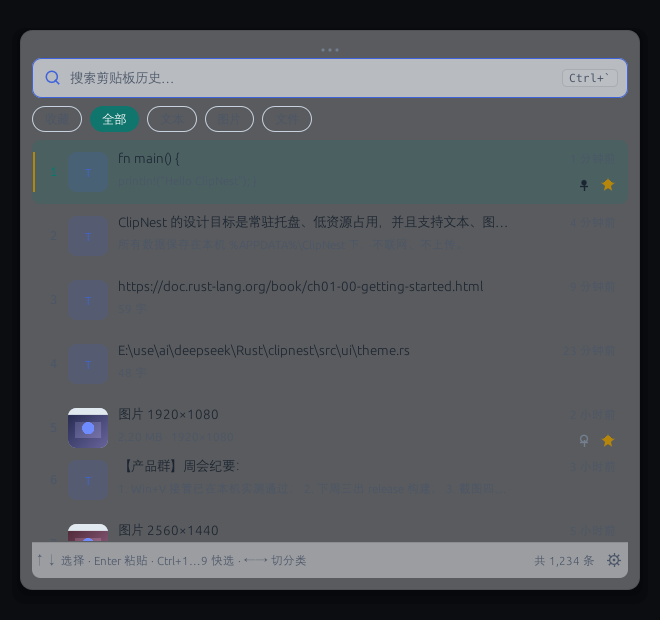
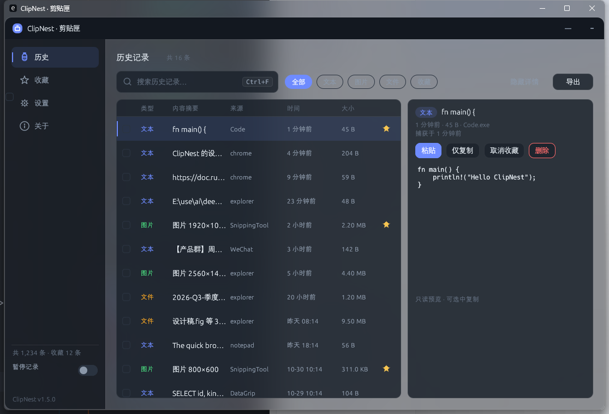
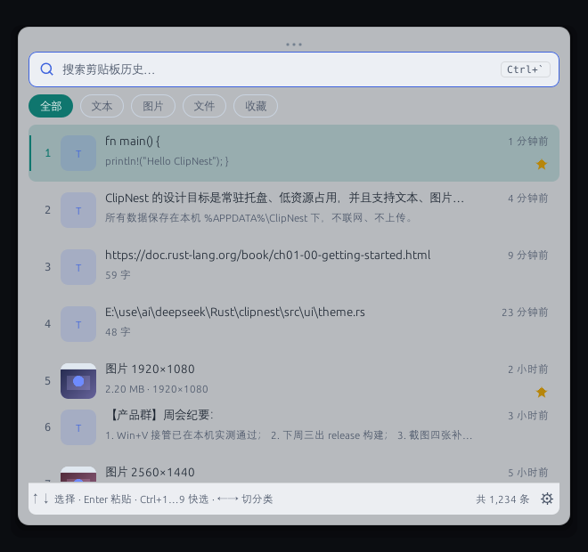

Win+V 的增强替代：中文搜索、图片与文件历史、收藏与回收站，本地 SQLite 存储、纯本地零联网。
ClipNest is a fast, local-only clipboard history manager for Windows 10/11, written in Rust.
可调、可无限；重启不丢，按容量自动治理老旧记录。
基于 SQLite FTS5 trigram，输入「剪贴板」也能命中「Windows 剪贴板历史」。
截图直接入库；文件列表记路径，收藏时把实体复制进库，原文件删了也能粘贴。
常用片段置顶收藏；误删进回收站，可恢复再彻底清空。
裁切干净的候选窗，透明度可调，不遮挡工作区。
单进程常驻约 57 MB Private；窗口预创建，全局快捷键呼出 20–80 ms。



| ClipNest | Windows Win+V | Ditto | CopyQ | |
|---|---|---|---|---|
| 实现 | Rust + egui，单文件 exe | 系统内置 | C++，需安装 | Qt，跨平台 |
| 中文子串搜索 | ✓（FTS5 trigram） | ✗ | 部分支持 | ✓ |
| 图片 / 文件历史 | ✓ / ✓ | 图片 ✓ / 文件 ✗ | 图片 ✓ | ✓ |
| 深/浅色 + 磨砂玻璃 | ✓ | — | — | 皮肤可换 |
| 开源协议 | MIT | 闭源 | GPL | GPL |
ClipNest 是第三方的 Windows 剪贴板历史管理器。Win+V 条数少、没有中文搜索、重启后容易丢失，也不支持文件；ClipNest 默认保存 5000 条（可调、可无限）到本地 SQLite，支持中文 FTS5 搜索、文本/图片/文件三类内容、收藏、回收站和容量治理，重启不丢。
完全免费开源，MIT 许可，可商用、可修改；exe 从 GitHub Releases 直接下载。
Windows 10 1809+ 与 Windows 11（x64）。免安装绿色单文件 exe，数据与配置在 %APPDATA%\ClipNest\，不写系统目录。
不会。纯本地、零网络：只有本地 SQLite 数据库；日志不含剪贴板全文；带 Clipboard Viewer Ignore 标记的复制（常见于密码管理器）不会被记录。
支持。文本、图片（截图）、文件列表三类都会入库；文件默认只记路径，收藏时才把实体复制进库，所以原文件删了收藏项也能粘贴出来。
升级：下载新 exe 覆盖即可，数据库自动迁移。卸载：退出程序后删除 %APPDATA%\ClipNest\ 目录；若开过开机自启，先在设置里关闭。
exptab-rs — Windows 11 资源管理器「新窗口自动并入标签」工具，同样是 Rust 单文件实现的学习项目。